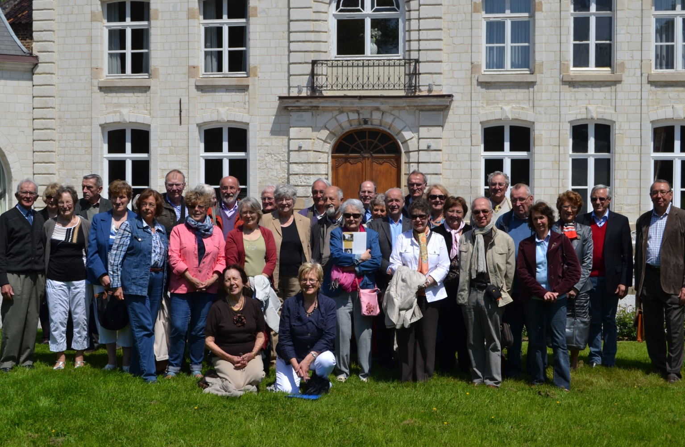
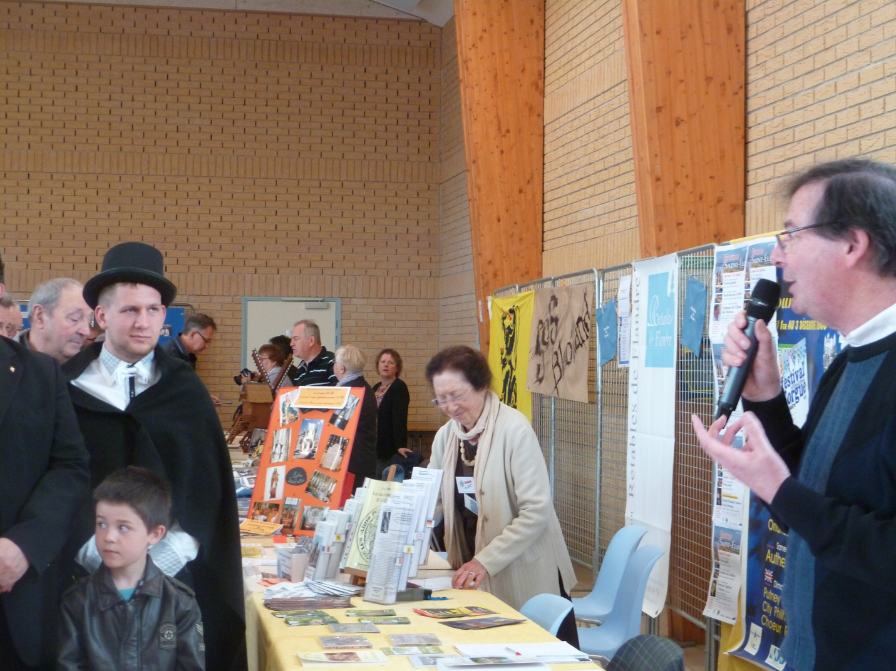

Activités
Association RETABLES de FLANDRE
L'association développe de nombreuses activités pour faire connaître et préserver le patrimoine des retables flamands : lettres d'information, formation de guides, expositions, conférences, festivals, visites guidées et éditions.
Lettre d'infos REDECOUVRIR N.51
Membres en visite

Stand sur un salon
Lettre d'information
La lettre Redécouvrir paraît annuellement. Envoyée aux adhérents, elle est largement diffusée dans les mairies et églises du Chemin des Retables.
Formation de guides
Guides spécialisés et certifiés formés par trois sessions successives : 1995/1996, 2001/2002, 2014/2015. Une nouvelle session a débuté en 2025.
Expositions photographiques
Trois expositions réalisées et mises à disposition des communes et associations : La Flandre à chœurs ouverts (1999), Formes et sens (2000), et exposition sur les vitraux (2010).
Conférences
Parmi les plus notables : celles de Mme Anita Oger-Leurent à Dunkerque, Paris et Lille, de M. Dominique Ponnau à Dunkerque, du Père François Boespflug à Arnèke.
Chemin des Retables
Ouvert en 1994 avec signalétique documentaire extérieure et intérieure, en partenariat avec le Comité régional de tourisme. 60 églises-étapes en secteur rural.
Restaurations
De 1989 à 2021, 41 retables ont été restaurés. Le Fonds de ressources de l'association y a contribué pour 39 d'entre eux.